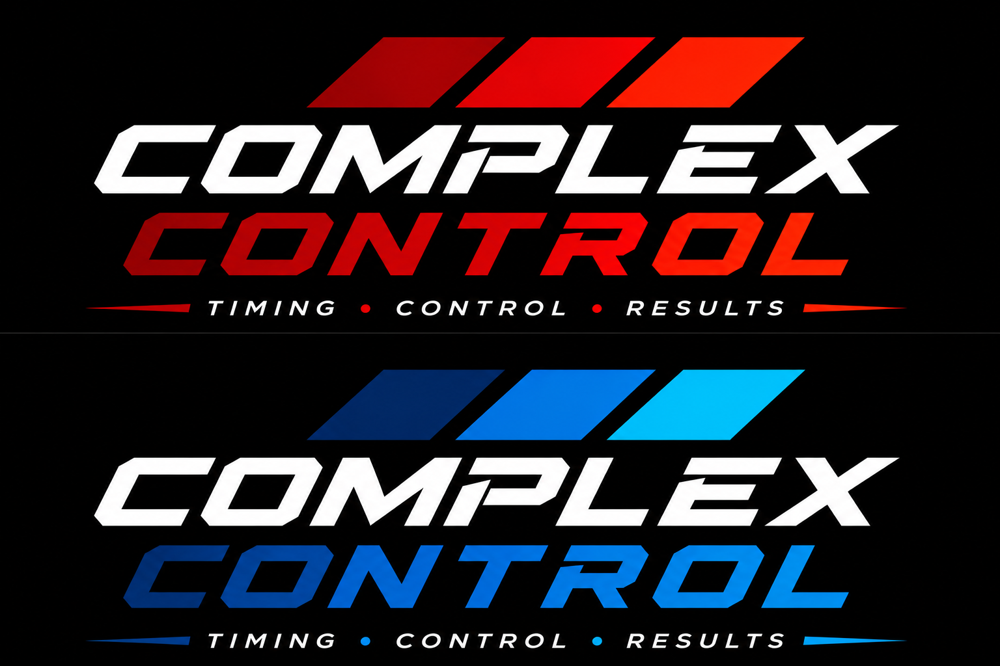

Read
The finish-line reader captures the unique RFID tag assigned to a racer.

RFID race timing
Complex Control joins live RFID timing, trackside race control, and real-time results in one local-first system.
Built for the timing line.
The system
A UHF reader captures each kart’s tag, a Raspberry Pi processes the observation at the edge, and the operator console updates the race immediately.
The finish-line reader captures the unique RFID tag assigned to a racer.
The Pi timestamps, filters, and stores the observation locally at the track.
The race console updates laps, running order, timing, and results in real time.
Operator workflow
Enter each racer and assign the RFID tag read by the physical system.
Configure laps, heats, starting assignments, and advancement.
Stage, start, pause, resume, and finish from the trackside console.
Follow the live leaderboard and retain the completed race results locally.
Track development
Complex Control has completed its first live reader-to-software proof. The next phase moves the full system to the track for timing-line calibration and race-day testing.